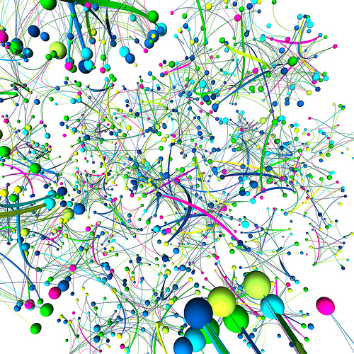
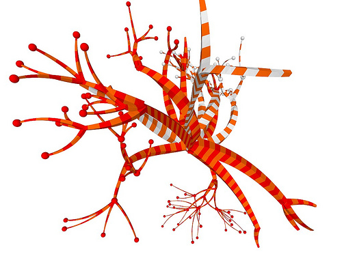

Marius Watz
mariuswatz.com
Archive of mwatz.tumblr.com (Oct 2011-July 2012), v1
Index
|
Tag index
|
About
|
GitHub Repo
blank
From the archives
April 26, 2012
Rejected sketches from past projects.

« Tracking nearly anything you do i..
ArtStack: One more (and slightly .. »
Tags
archive
art
generative
sketch
work